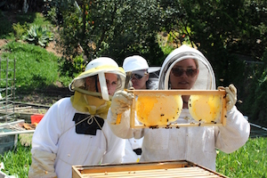
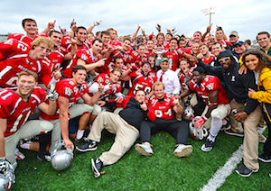

How to get involved.
There is a club for every interest at WashU. Some awesome examples are the bee keeping club called the BeeSchool. These WashU students spend thier time cultivating bee hives and harvesting the honey.
<They maintain two hives on campus. There are also clubs for religious groups, such as the First Year Students of Hillel or Christians on Campus. There are also clubs specifically for international students, like the Chinese Students Association. There truly is a club for every interest and it is a great way to find a social group.
Sport Clubs
WashU students love to stay active. In this spirit the University gives us access to University, club, and intramural sports. University, also known as varsity, sports are a huge time commitment but can be very rewarding for those students who pursue it. However for those people who are less talented or interested you may want to look into club sports. WashU has club sports ranging from soccer to rugby to ultimate frisbee, so you will definitely be able to find your niche. These sports take about as much time as your average high school sport and some even less so you can commit as much as you choose to. Intramural sports are another great way to stay active and meet new people. These sports are very low commitment but very fun! I encourage you to join a team.